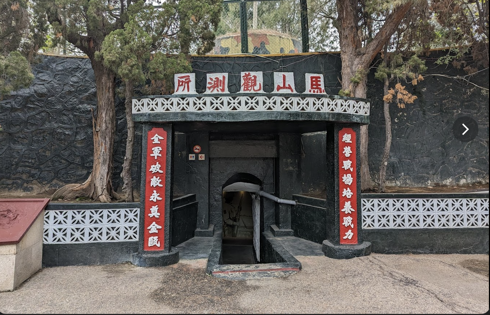

位於金沙鎮的馬山，距對岸的角嶼僅2,100公尺，退潮時更只有1,800公尺，是金廈兩岸最靠近的據點，在過去是觀測對岸海上活動的軍事要塞，有「天下第一哨」之稱。
進入觀測所大門後，會通過一段的戰備坑道，坑道內設有槍堡等軍事設施，天候佳時福建的鴻漸山清晰可見，讓過去的軍事印象重現眼前，成為熱門的觀光景點！
馬山播音站
位在進入馬山觀測所路旁的馬山播音站，與古寧頭北山播音站相同，是對大陸心戰喊話的第一線，在地人俗稱為喊話站。已故歌星鄧麗君，也曾二度於馬山播音站向對岸廣播。隨著時代的變遷，心戰喊話現在已經沒有必要，只偶爾會播放流行音樂及台語歌曲。
景點資訊
- 管理單位：金門國家公園管理處
- 電話：+886-82-330086
- 地址：金門縣金沙鎮官澳東北角
- 開放時間：星期日至星期六：08:30 – 17:00
- 門票資訊：免費